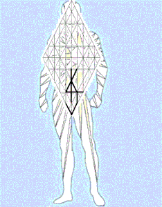

A Seventh Day before Yircho
We've been six days before Jericho already, having circled from Malkuth to Kether while forming fuller understandings of Malkuth in the completion of each circuit. The sixth day of our march was blessed by the active guidance of the captain of the hosts of YHWH; and many in our company-- each for his reasons-- could scarce refrain from shouting. Praise the Father for your patience; for our shout of unison, when it comes, must recall the shout of the King.
The light of the seventh day is quickly upon us. Each of you knows the rules of engagement: at the last sounding of the seven trumpets of rams' horns, the congregation is to shout forth its praises of Yah and to ascend, every man straight up before him. May the Father of Lights give the trumpet and the answering shout a clear and certain sound, that those trembling in Yircho's shadows may vanish as the dew, when the walls that hide them from scrutiny fall down flat. We pray, also, that the walls should fall softly; for we owe mercy to the house of Rachab sitting atop the wall, for showing kindness to our emissaries in her care for the scarlet thread: no kindness done to Y'Sharal shall go without reward.
And when the living creatures went, the wheels went by them: and when the living creatures were lifted up from the earth, the wheels were lifted up. Whithersoever the Spirit was to go, they went, thither was their spirit to go; and the wheels were lifted up over against them:for the spirit of the living creatures was in the wheels. When those went, these went; and when those stood, these stood;and when those were lifted up from the earth, the wheels were lifted up over against them: for the Spirit of the Living Creature was in the wheels.
Yircho is moonlight. Build not by her light, but neither despise her light; for she is faithful to relay the illumination she receives from the sun and has done much for Y'Sharla. The fault is ours, moreover, if we should build in darkness according to measurements taken by half-light. We are free to behold the moonlight that is reflected from above and to speak of it in our assemblies; but we are called to wait upon the Light of hwhy, that our building may be according to the measurements of his perfect perspective.
Elohim created all things by power of His Word. Let sun and moon shine seven times brighter than they've shone, yet is the Light of the first thought of hwhy was infinitely more brilliant than they; and the sum of his thought, who can approach? Therefore are given the instructive lights of sun the moon, that we may learn of Glory: Y'Shar-AL and his tribes, his branching of life; Messiah and His twelve months-- Joshua and the fellows that sit before him, men greatly wondered at.
He who ascended far above all heavens has given us command, whom to worship and whom to serve and by whom to build. YahuWah Echad, the spiritual source and substance of all things in the Son-- within in the computation of all things material and immaterial in every dimension. Yahushua, the Holy Measurement of all that appears, is yet but he Door to the Heavenly Father of Spirit, in whom we live, and move, and have our being.
Whether the Son ascends or descends, he is ever before the Father's throne. Whether the Father's Light in the Son shines by the sun or by the moon or in the faces of we who behold, the Light is One; and the hosts of heaven are but they who shall have passed through the Door as we: the brethren of Yahushúa, the Holy One of Y'Sharla.
There is, therefore, no temptation nor reward that can avert the Son's fidelity from the Father's will; for the Father fills all by the Son. Ought the Son seek to ascend? Has He not learned that the Father is there and loves Him? Should he seek to descend? The Father is there and loves him. It is the wisdom of the Son to inhabit the field of his planting to the Father's glory, that he may do the Father's will thoroughly, and without double-mindedness, in whatsoever circumstances he might find himself. Certain knowledge of the Father's will makes all things clean.
Does the Son contend over words? Is it not written, "I create the fruit of the lips"? Does the Son contend because of works? Is it not written, "Thou couldest have no power against me (nor against the flock in whom I am One), except it were given thee from above"? If the Son speaks or acts for or against anything, it is because he has received commandment of the Father. Therefore, it is not the Son that speaks or acts, but the Father, who dwelleth in him.
Cursed is he who reads a book and sees the scribe in its pages. Cursed also, the man that sees not the scribe. Blessed among the Holy Ones is he who reads and sees the Unity of Father and Son in the service of YHWH Elohenu. To such a one, the white and black fire upon the pages of every book transcend the limitations of a faithful scribe's tools and is incapable of concealment by the skills of a churlish one.
Are a man's words false? Do not they instruct you? Are a man's words true? Can they save you? If they are very scripture, do not they yet but testify of the Unity of the Elohim of Father and Son?
I will mention the loving kindness of hwhy and the praises of hwhy according to all that hwhy hath bestowed on us, and the great goodness toward the house of Y'Sharla, which He hath bestowed on them according to His mercies, and according to the multitude of His loving kindnesses.
For He said, Surely they are my people, children that will not lie: so he was their Savior. In all their affliction He was afflicted, and the angel of His presence saved them: in His love and in His pity He redeemed them; and he bare them, and carried them all the days of old.
Wheels within wheels, and all of them full of eyes, round about. The Earth is His holy mountain, and every atom in every molecule of every substance is wholly filled by wheels within wheels that turn not as they go.
The voice of my beloved! behold, he cometh leaping upon the mountains, skipping upon the hills.
My beloved is like a roe or a young hart: behold, he standeth behind our wall, he looketh forth at the windows, shewing himself through the lattice.
All vessels, whether for honor or dishonor, are holy to hwhy. Children that will
not lie, each of them bears witness to the Truth shining through the lattice.
Yahushua is the Chariot of Fire: the Son of the Throne, as it is written in the gospels concerning the transfiguration, "Also, out of the midst thereof came the likeness of four living creatures. And this was their appearance; they had the likeness of a man." Nor is the Chariot Son of Elohim idle: wherever the Spirit is to go, the spirit of the living creatures will surely go.
Did the Spirit give us mysteries, laws, histories, psalms, proverbs, prophecies, gospels, epistles, yet more prophecies, and countless other writings of holy men? Search in them for the imprint of the Chariot's wheels. When you have found them, you will be able to discern the faces of the Son to whom mankind gives birth, Yahushúa.
When the numbers are too many, consider the cherubim-- "their whole body, and their backs, and their hands, and their wings, and the wheels, were full of eyes round about, even the wheels that they four had"-- are not these eyes the elect of Elohim? The covering wings are the healing agencies of the Son. If the numbers seem too few, recall that all are in process of becoming One, and that correspondences will sometimes bridge the differences in numerical association.
Truly, the first word of Genesis and the last word of Revelation are wholly gospel, along with every jot and tittle in between. Every scripture is equally profitable in teaching us the way to the United Order of hwhy. Nor is the written word the end to our instruction. HaShem is a consuming fire: potentiality is the fuel; Ruach HaQodesh is the catalyst; Yahushua is the flame, and we are the sparks. We are words He has spoken, and we do not fall to the ground in vain: each of us shall accomplish that to which we are appointed, as the Earth fills with the knowledge of HaShem.
Lift up your heads, O ye gates; and be ye lifted up, ye everlasting doors; and the King of glory shall come in.
Who is this King of glory? strong and mighty,
hwhy mighty in battle.
Lift up your heads, O ye gates; even lift them up, ye everlasting doors; and the King of glory shall come in.
Who is this King of glory? YahúWah Tsavuot, He is the King of glory.Selah.
site map
Standing in Stillness book menu